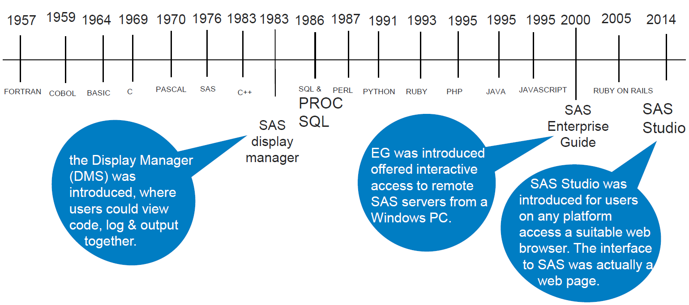

| num | date | topic |
|---|---|---|
| 1 | 2022-06-23 | Ways to code SAS |
| 2 | 2022-07-07 | SAS macros (1) |
| 3 | 2022-07-21 | SAS macros (2) |
| 4 | 2022-08-04 | Proc SQL |
| 5 | 2022-08-18 | R |
| 6 | 2022-09-01 | ArcGIS |
Welcome
“Even when walking in a party of no more than three, I can always be certain of learning from those I am with.” - Confucius
Purpose
- Have a space to share code and learn from/with each other
Format
Flexible
Relaxing
Wide range of topics
Tentative topics
Other topics of interest?
- Tableau
- Convert
character->numericandnumeric->character - Git
How to run SAS
Three interfaces:
- SAS Windowing Environment
- classic
- SAS Enterprise Guide
- project based; program history/version control
- SAS Studio
- in a web browser
“DM is the simplest, EG has projects, SS runs in browsers.”
https://blogs.sas.com/content/sastraining/2017/04/12/whats-your-sas-interface/
Other ways:
- SAS OnDemand for Academics (online; no installation)
- Jupyter Notebook (SAS + Python)
- R studio (package:
SASmarkdown)
Timeline

ref: http://www.wiilsu.org/sdajgfuirHIUTlsdfnloa312/SUSJun2016/Proceedings/Slides/Shankar%20-%2040%20Years%20of%20SAS%20-%203%20Incredible%20Coding%20Tools.pdf
SAS Windowing Environment - Display Manager (DM)
- Provides a full programming interface that can be used to write, edit, and submit SAS code
- Windows for viewing log and output
- An Explorer window to help you find files
- A table viewer: view and edit SAS data sets
SAS Studio
- Runs in a browser (e.g., Google Chrome, MS Edge, Firefox)
- Snippets
- Issues
- mouse scroll wheel
- dependency on web browsers
SAS OnDemand for Academics
- “SAS® software in the cloud – for free”
- Good for learning SAS
https://www.sas.com/en_us/software/on-demand-for-academics.html
https://welcome.oda.sas.com/login
SAS Enterprise Guide
Project-based
Point-and-click
Program History (track changes)
Set up: Tools >> Options >> Program History
Changes Commit History
Jupyter Notebook
- Run both SAS and Python programs in the same environment
RUN SAS IN PYTHON WITHOUT INSTALLATION
https://www.listendata.com/2021/01/run-sas-in-python-without-installation.html
SAS in R studio
- Package:
SASmarkdownby Doug Hemken - https://www.ssc.wisc.edu/~hemken/SASworkshops/Markdown/SASmdpackage.html
- https://github.com/Hemken/SASmarkdown
- https://www.r-bloggers.com/2019/09/create-rmarkdown-document-with-sas-code-and-output-sas-engine/